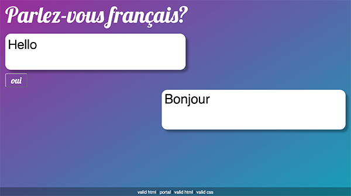
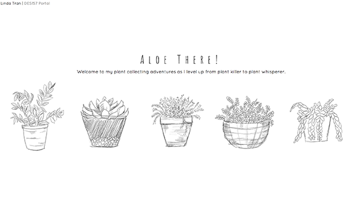
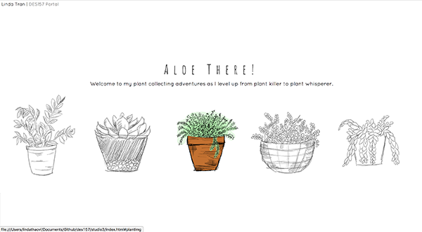
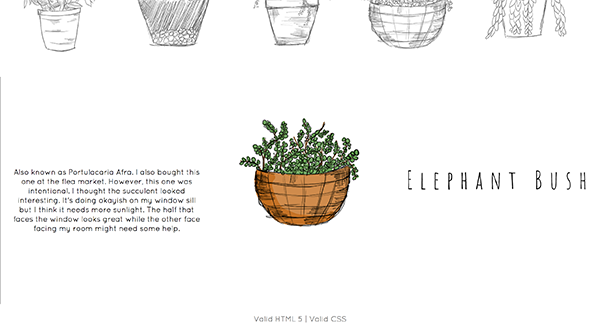

3.9.17
Chapter 10: Mobile. It’s Not Just a City in Alabama Anymore
In chapter 10 of Steve Krug’s Don’t Make Me Think, he discusses the differences and needs that designers should consider when creating for mobile versus desktop. He address three topics: tradeoffs, affordances and usability and how they come to together to make an exceptional mobile experience for the user. Designers need to make tradeoffs and decide what is most important for the user and how it contributes to the experience since a small screen can only show so much. What is most important when they access it on their phone versus on their desktop? He says “Most of the challenges in creating good mobile usability boil down to making good tradeoffs,” which I agree with. One must be able to figure out what works well to make clear your end goal while keeping it intuitive and appealing. Designers should also be aware of affordances. When on mobile, you lose your cursor which eliminates many useful hints like tooltips, hover effects, etc. Designers need to be able to use other visual clues that allow a user to associate it with an interactive element. He also criticises the increasing popularity of flat design because it takes out 3D as a visual cue for a button being a button and so on. However, I disagree because I feel that as design trends change, the users and their preferences change with it. I think there are other ways a designer can hint at an interactive element. Affordances should always be visible to the user. Most importantly, the designer should never make tradeoffs or decisions in affordances that compromise usability. They must always make sure that mobile sites are navigable through scroll and zoom and that it is learnable and memorable. Designing mobile sites requires a balance and to make the right decisions, one must conduct usability testing. Overall, mobile optimization is no longer an option but it’s constraints make for interesting design decisions and outcomes.
Check out: Airbnb
2.22.17
Meet Me at the Library

For my last studio, instead of a library I decided to learn how to use
the Google Cloud Translate API. It is essential that I am able to translate
messages between users in my interface because my audience involves non english
speakers as well. Langauge is a large player in barriers to communication
and so I wanted to incorporate Google Translate in the messaging part of
my project.
Google Cloud Translate API allows you to take a string and translate it to any language
that google translate offers. It allows you to use google translate within
your project for whatever purposes that may be. The possibilities and applications
are endless in regards to translation. The only downside to this is that it is not
free. I was able to get an api key through a free trial that gave me $300 credits over 60 days.
While learning how to use this API, I spent a lot of time trying to figure
out how to take the translated text and display it in my html. Essentially,
I used js to grab the string which the user entered into the text box and
contatenated it to the api url. Once google translated the string, I
needed to parse the json to make it a js object and throw it back into
the html as a translated response.
I also struggled with making the translation appear once the submit button
of the form was clicked. It turned out I wasn't calling my translation function
on submit in my js.
Through my time learning how to use an api and building my translation box
I feel that I've increased my understanding of not only apis but also js
and syntax in general. It was a frustrating but also rewarding experience.
Check out: Google Cloud Translate
2.14.17
Time is on My Side

I designed my interface to display countdowns of different rotations and orbits
that we observe in space. I decided to do three countdowns which are displayed
in alternating left and right positions. With each countdown was a div that
provided more information about the particular rotation it was counting down.
 The site greets you first with the title and as you scroll down you are exposed to the countdowns.
My tool tips were gifs of that particular movement the timer was counting. I thought that it gave
a nice visual touch to the numbers and text that are already provided.
The site greets you first with the title and as you scroll down you are exposed to the countdowns.
My tool tips were gifs of that particular movement the timer was counting. I thought that it gave
a nice visual touch to the numbers and text that are already provided.
Three Effective Features:
-
-Gif as Tool Tips :
Provides a visual to the information.
-
-Alternating Left/Right :
Separates the different peices of information for quicker distiction.
-
-Large Coundown:
It becomes the main focal point of the website and the other information acts as an aide.
2.7.17
The Archive

For my interface, I designed it around five plants that I have in my room.
I wanted to keep the overall look light and whimsical because it reflects
my relationship with these plants. I'm slowly learning how to care for them
and so I don't want to have a stiff, official look to it.

When you first see the site, you are greeted with a brief description of the
purpose of the interface and five illustrations of the plants. I added a hover
effect that faded in the color image of the plant to add more life and animation
to the page. I also changed the cursor to a water drop to add to the concept of
the page and as a fun reminder that plants need to be watered to survive.

When you click on the plant, the page automatically scrolls down to the section
that displays the plant alone. When you hover over the image, the info and
plant name pops up giving the user more about my experience with the plant and
it's name.
Some Key Features are:
-
-Hover effects :
Provide feedback and animation to the page.
-
-Cursor :
The cursor changes from the started pointer to a water drop
when hovered near a link for user feedback.
-
-Page Links:
Images are linked to elements of the page so that users
can easily jump to the correct location.
1.30.17
Web-based Form
Quizlet is a study tool that I like to use when I have many terms that I need to memorize. The website uses forms that allow the user to fill in the areas with their term and definition. The interface design itself is very straightforward
with rows that have an input area for the term and it's definition. They list five rows that you can start with and if you need more, you can simply click on the "+add card" button to add more rows. Once you are done with inputting data,
you hit "create" and quizlet with make a stack of study cards for you to use. I like this form because it's appearance is extremely simple so that I can input my data as quickly as possible. Visual hierarchy is created through use of color,
and headings. Nothing is distracting and the page is simple to use with appealing animations as you hover through different elements.
Check out:
Bill Derouchey's Learning Interaction Design From Everyday Objects


1.11.17
User Interface
The interface that I choose to analyze is GoogleMaps because I have no sense of direction and use the app quite often to find my way around. For a GPS app, it is very important that the interface is simple and easy to use as well as quick
because many people use this in their cars. I sometimes find myself needing to adjust the destination and I usually do that at stop lights which means that I don't have much time to fiddle around with different buttons and pathways. I
like that the GoogleMaps is simple to enter and exit out of a destination and allows for saved places for quicker navigation. The font is easy to read and the type is large enough to take a quick glance while driving. The map also switches
from day to night mode reducing the contrast while driving at night. Compared to other map apps like Apple Maps, Google Maps is the easiest in my opinion to use. The buttons are clear and big enough to press requiring less accuracy compared
to small buttons or text. Overall I think the the scale and navigation through the app is optimal and easy to use thus making it ideal for the environment that it is used in.